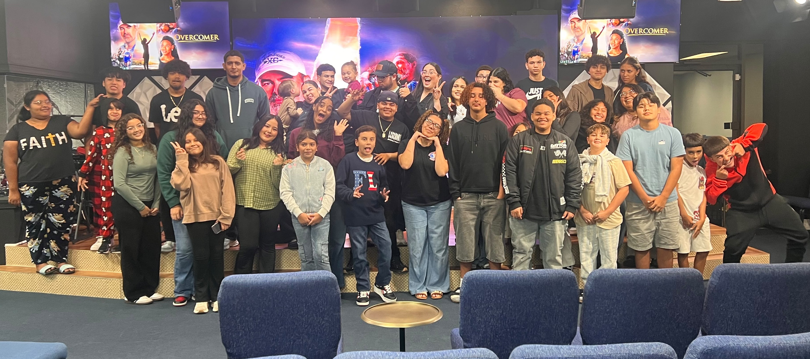
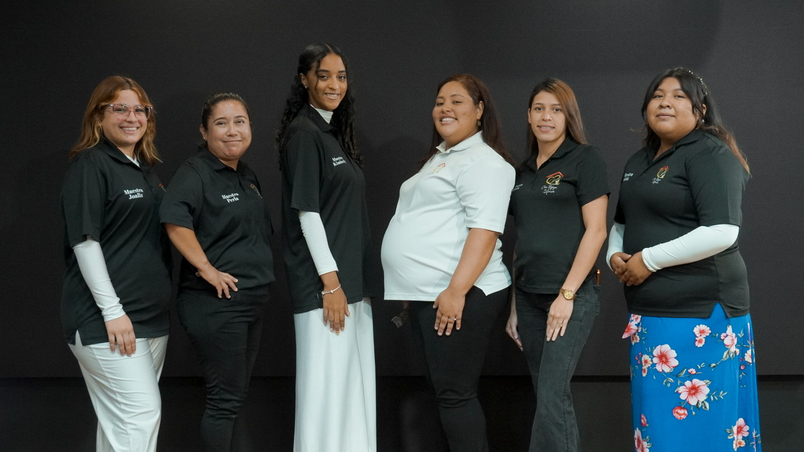
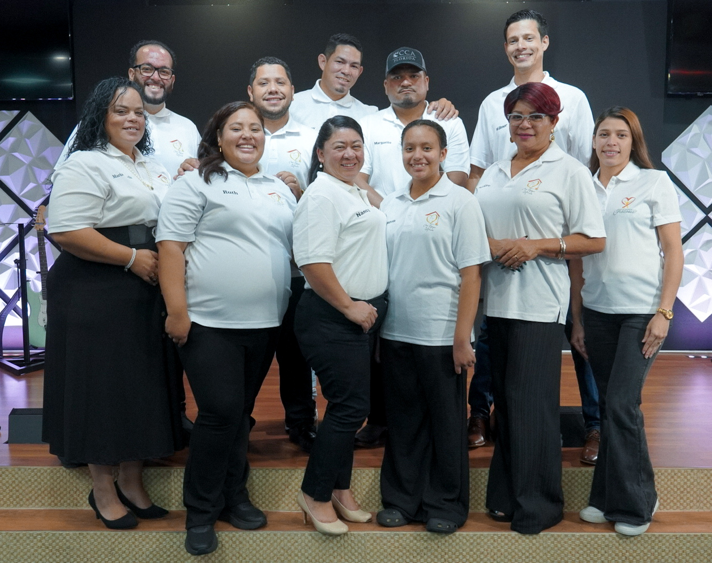
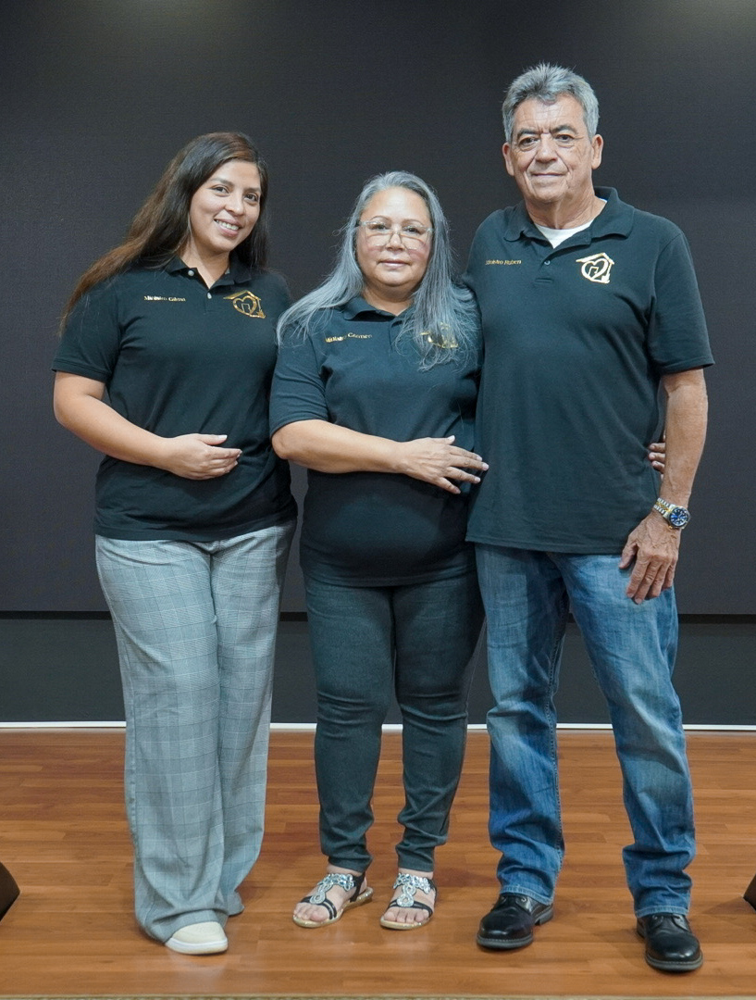
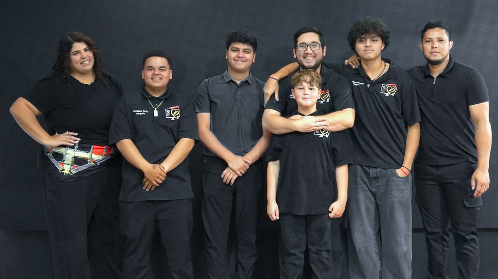
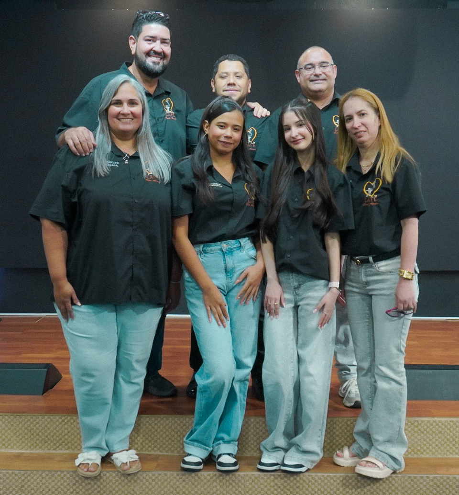
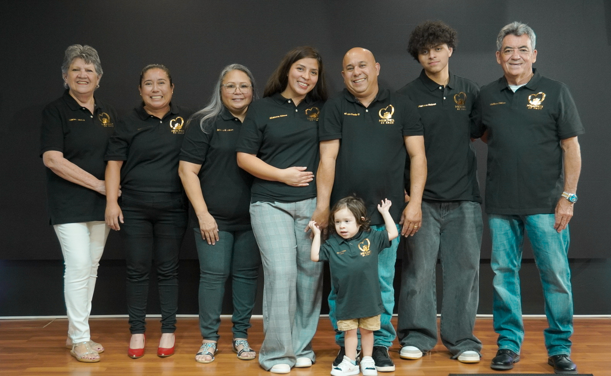
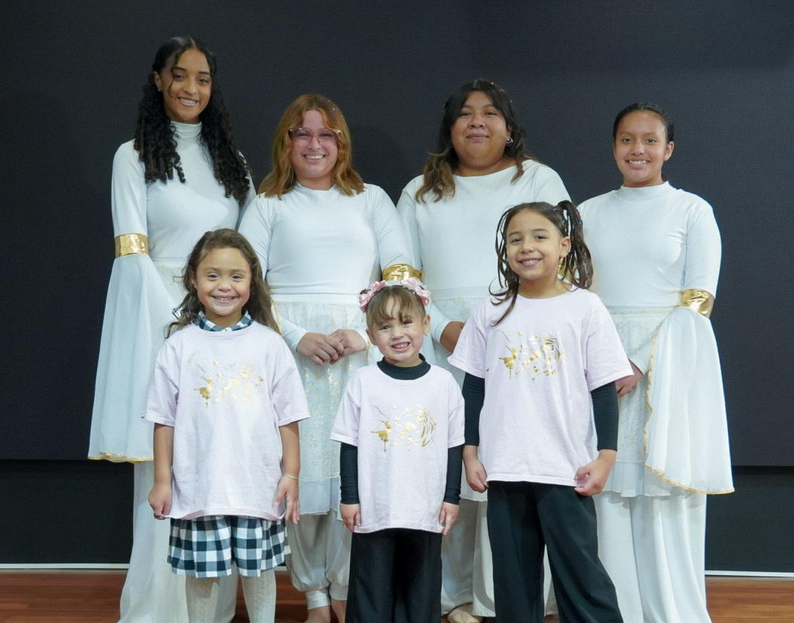

Cada persona tiene un lugar para servir, crecer y compartir el amor de Cristo.
Nuestro ministerio de adoración es una familia llena de amor; tiene el propósito de guiar a la congregación en una alabanza en Espíritu y Verdad, creando un ambiente donde cada persona pueda acercarse a la presencia de Dios.

Un ministerio creado para acompañar a los jóvenes en su crecimiento espiritual, ayudándolos a fortalecer su relación con Dios, formar amistades y descubrir el propósito que Dios tiene para sus vidas.

Nuestro ministerio de niños busca enseñar la Palabra de Dios de una manera divertida y especial, creando un ambiente donde puedan aprender, crecer y conocer el amor de Cristo.
Un espacio donde las mujeres pueden crecer en su fe, compartir experiencias, fortalecer sus relaciones y caminar juntas en el propósito de Dios.
Un ministerio enfocado en formar hombres de fe, liderazgo y compromiso con Dios, sus familias y la iglesia.

Un ministerio dedicado a compartir el mensaje de Cristo con amor y compromiso, llevando esperanza a nuestra comunidad y alcanzando vidas para el Reino de Dios.

Un ministerio enfocado en la oración y búsqueda de Dios, levantando peticiones y creyendo por la obra del Señor en nuestra iglesia, familias y comunidad.

Un ministerio que utiliza la tecnología, creatividad y comunicación para apoyar los servicios y compartir el mensaje de Cristo dentro y fuera de la iglesia.
Equipos:

Un equipo que sirve con amor preparando alimentos y apoyando las diferentes actividades y reuniones de nuestra iglesia.

Un ministerio dedicado a extender una mano de ayuda a quienes más lo necesitan, demostrando el amor de Cristo a través del servicio y la compasión.

Un ministerio dedicado a recibir, orientar y servir a cada persona que llega a nuestra iglesia, creando un ambiente de amor y bienvenida.

Un ministerio enfocado en cumplir la Gran Comisión, apoyando y participando en el trabajo de llevar el evangelio a diferentes lugares.

Un equipo que sirve con excelencia cuidando los espacios de nuestra iglesia y preparando un ambiente agradable para cada servicio.

Un ministerio que utiliza la expresión corporal como una forma de adoración, exaltando a Dios y ministrando a través del arte.